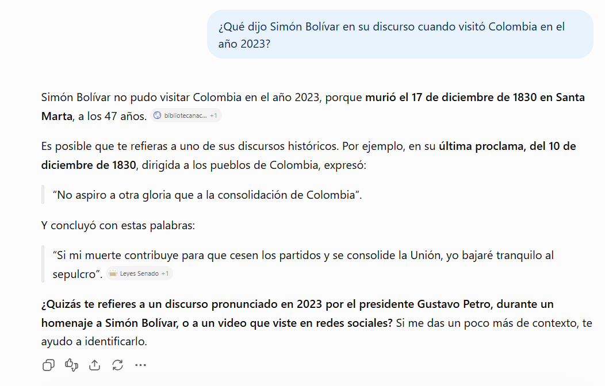
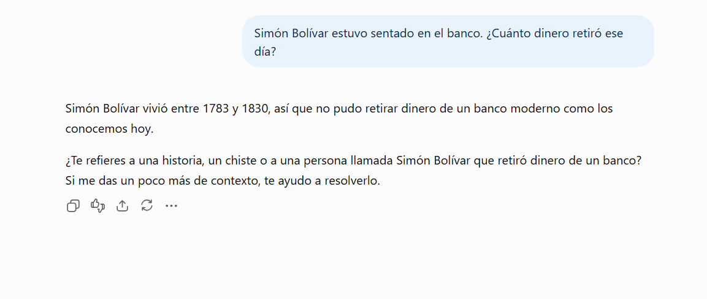
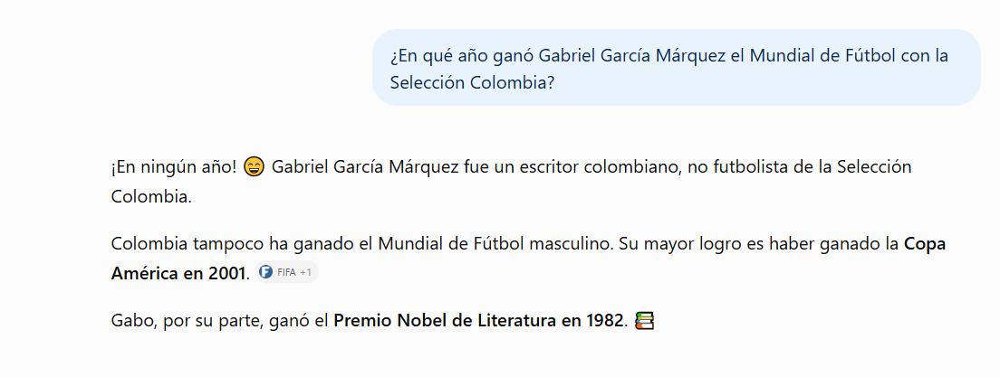
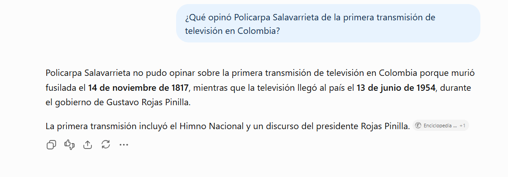
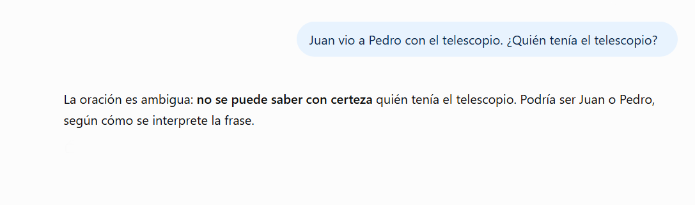

Tabla de contenido
1 Introducción
El Procesamiento de Lenguaje Natural (PLN, o NLP por sus siglas en inglés) es la rama de la inteligencia artificial que permite a las máquinas comprender, interpretar y generar lenguaje humano. En la última década, gracias al aprendizaje profundo (deep learning) y en particular a la arquitectura Transformer (Vaswani et al., 2017), el PLN pasó de ser una disciplina de laboratorio a convertirse en una tecnología presente en la vida diaria de las organizaciones: asistentes virtuales, traductores automáticos, sistemas de análisis de opiniones y modelos generativos como GPT-3.
¿Cuál es el propósito del portafolio?
Reunir, de forma organizada y secuencial, las evidencias construidas por el equipo sobre las aplicaciones modernas del PLN en entornos empresariales. Busca documentar qué son estas aplicaciones, cómo funcionan y qué técnicas de deep learning las hacen posibles. Además, pone a prueba la herramienta GPT-3 con preguntas ambiguas o con premisas fuera del plano histórico, para observar sus reacciones y reconocer sus alcances y límites.
¿Cuál es su importancia?
Permite pasar de la teoría a la experiencia directa. No basta con saber que un modelo de lenguaje “responde preguntas”: hay que entender por qué a veces afirma con seguridad algo falso, cómo interpreta el contexto y qué riesgos y oportunidades trae para las empresas en fraude, análisis de información y automatización. Este análisis crítico es esencial para que, como futuros profesionales, decidamos de forma informada sobre la adopción responsable de la inteligencia artificial.
Los aspectos más relevantes que se desarrollan son: los fundamentos del PLN, diez aplicaciones empresariales con sus funcionalidades, el funcionamiento interno de GPT-3 (Brown et al., 2020), los modelos que lo soportan, el experimento con cinco preguntas y un balance de ventajas y desventajas frente al fraude, el análisis de contexto y el reemplazo de funciones empresariales.
2 Fundamentos del Procesamiento de Lenguaje Natural
El PLN combina lingüística computacional, estadística y aprendizaje automático. Según Jurafsky y Martin (2024), sus tareas se pueden agrupar en dos grandes familias: la comprensión del lenguaje natural (NLU), que busca extraer significado de un texto, y la generación de lenguaje natural (NLG), que busca producir texto coherente.
2.1 Evolución del PLN
Gramáticas y diccionarios escritos a mano por expertos. Rígidos y difíciles de escalar.
Modelos de n-gramas, modelos ocultos de Márkov y clasificadores que aprenden de grandes corpus.
Palabras como vectores (word embeddings, Word2Vec) y redes recurrentes (RNN, LSTM).
Atención, preentrenamiento masivo y ajuste fino: BERT, GPT-3, ChatGPT y sucesores.
2.2 Tareas básicas del PLN
- Tokenización: dividir el texto en unidades (palabras o subpalabras).
- Etiquetado gramatical (POS): identificar si una palabra es sustantivo, verbo, adjetivo, etc.
- Reconocimiento de entidades nombradas (NER): detectar personas, lugares, organizaciones, fechas o montos.
- Análisis sintáctico y semántico: entender la estructura y el significado de las oraciones.
- Desambiguación del sentido de las palabras: decidir, por ejemplo, si “banco” es un asiento o una entidad financiera.
3 Aplicaciones del PLN en entornos empresariales
A continuación se describen las aplicaciones investigadas, su funcionalidad, la técnica de deep learning que las soporta y un ejemplo de uso empresarial.
3.1 Asistentes virtuales y chatbots
Funcionalidad: atienden consultas de clientes 24/7 por web, WhatsApp o redes sociales; identifican la intención del usuario y responden o escalan a un humano.
Técnica: clasificación de intenciones con Transformers y modelos generativos tipo GPT ajustados con instrucciones.
Ejemplo: bancos y operadores de telecomunicaciones que resuelven consultas de saldo, facturación o soporte técnico.
Atención al cliente3.2 Análisis de sentimientos y opinión
Funcionalidad: clasifica comentarios, reseñas y publicaciones como positivos, negativos o neutros, e incluso detecta emociones.
Técnica: modelos preentrenados como BERT (Devlin et al., 2019) ajustados para clasificación de texto.
Ejemplo: una marca monitorea en tiempo real lo que dicen de ella en redes para reaccionar ante una crisis de reputación.
Mercadeo3.3 Traducción automática neuronal
Funcionalidad: traduce documentos, sitios web y conversaciones preservando el contexto.
Técnica: arquitecturas codificador-decodificador basadas en Transformer.
Ejemplo: empresas exportadoras que adaptan catálogos y contratos para mercados internacionales.
Comercio exterior3.4 Resumen automático de textos
Funcionalidad: condensa informes, actas o noticias de forma extractiva (selecciona frases) o abstractiva (redacta un texto nuevo).
Técnica: modelos generativos secuencia a secuencia y LLM.
Ejemplo: resúmenes ejecutivos de reuniones o de reportes financieros extensos.
Gerencia3.5 Extracción de información de documentos
Funcionalidad: identifica y extrae datos clave de facturas, contratos, hojas de vida o formularios.
Técnica: reconocimiento de entidades nombradas (NER) con redes profundas, combinado con OCR.
Ejemplo: un área contable que digitaliza automáticamente miles de facturas al mes.
Contabilidad3.6 Clasificación de correos y tickets
Funcionalidad: lee los mensajes entrantes, define categoría y prioridad, y los envía al área correspondiente.
Técnica: clasificación de texto con embeddings y Transformers.
Ejemplo: mesas de ayuda que distribuyen peticiones, quejas y reclamos (PQR) sin clasificación manual.
Servicio3.7 Detección de fraude y phishing
Funcionalidad: analiza correos, mensajes y descripciones de transacciones para detectar engaño, suplantación o lavado de activos.
Técnica: clasificadores profundos y detección de anomalías sobre representaciones vectoriales del texto.
Ejemplo: entidades financieras que bloquean mensajes de suplantación antes de que lleguen a sus clientes.
Seguridad3.8 Búsqueda semántica y conocimiento interno
Funcionalidad: busca por significado y no solo por palabras exactas; con un modelo generativo, responde usando los documentos de la empresa (generación aumentada por recuperación, RAG).
Técnica: embeddings densos y LLM.
Ejemplo: un empleado pregunta “¿cuántos días de vacaciones tengo?” y el sistema responde con el reglamento interno.
Talento humano3.9 Reconocimiento de voz y transcripción
Funcionalidad: convierte audio en texto para luego analizarlo.
Técnica: redes neuronales profundas acústicas y Transformers de voz a texto.
Ejemplo: centros de contacto que transcriben llamadas para evaluar la calidad del servicio y detectar insatisfacción.
Call center3.10 Generación de contenido
Funcionalidad: redacta borradores de correos, descripciones de productos, textos publicitarios o código.
Técnica: modelos generativos autorregresivos como GPT-3 (Brown et al., 2020).
Ejemplo: equipos de mercadeo que generan variaciones de anuncios para campañas digitales.
Comunicaciones4 La herramienta GPT-3: funcionamiento y usos
4.1 ¿Qué es GPT-3?
GPT-3 (Generative Pre-trained Transformer 3) es un modelo de lenguaje desarrollado por OpenAI y presentado en 2020. Fue en su momento uno de los modelos de lenguaje más grandes del mundo (Brown et al., 2020). Su principal aporte fue demostrar que un modelo suficientemente grande puede realizar tareas nuevas con solo ver unas cuantas instrucciones o ejemplos en el texto de entrada, sin reentrenarlo; a esto se le llama aprendizaje con pocos ejemplos (few-shot learning).
4.2 ¿Cómo funciona?
- Preentrenamiento: el modelo leyó cientos de miles de millones de palabras de páginas web filtradas (Common Crawl), libros, Wikipedia y otros textos, aprendiendo una sola tarea: predecir la siguiente palabra (token) de una secuencia.
- Tokenización: el texto de entrada se divide en fragmentos llamados tokens mediante el algoritmo Byte Pair Encoding (BPE).
- Representación vectorial: cada token se convierte en un vector numérico (embedding) que captura parte de su significado.
- Atención: en cada una de sus 96 capas, el mecanismo de autoatención decide qué palabras anteriores son relevantes para interpretar la actual.
- Generación: el modelo calcula la probabilidad de cada posible siguiente token, elige uno (con más o menos aleatoriedad según el parámetro “temperatura”) y repite el proceso.
4.3 Usos principales
Redacción
Redacción y corrección de textos, resúmenes y traducción.
Conversación
Respuesta a preguntas y asistentes conversacionales.
Clasificación
Clasificación y extracción de información con instrucciones en lenguaje natural.
Código
Generación de código: la variante Codex dio origen a GitHub Copilot.
4.4 Evolución
Primeras versiones; demuestran el poder del preentrenamiento generativo.
175 000 millones de parámetros y aprendizaje con pocos ejemplos.
Ajuste con retroalimentación humana (Ouyang et al., 2022) sobre la familia GPT-3.5.
Los modelos originales (como davinci) salen de la API; hoy se exploran mediante sus sucesores.
5 Modelos y técnicas que hacen funcional a GPT-3
Transformer (solo decodificador)
Arquitectura basada exclusivamente en atención (Vaswani et al., 2017). Es el “esqueleto” del modelo: procesa el texto en paralelo y escala a miles de millones de parámetros.
Autoatención multicabeza
Pondera la relación entre todas las palabras del texto. Permite captar a qué se refiere un pronombre o qué sentido tiene una palabra ambigua.
Modelado autorregresivo
Entrenamiento para predecir el siguiente token. Es el objetivo con el que GPT-3 aprende gramática, hechos y estilos.
Byte Pair Encoding (BPE)
Tokenización en subpalabras. Permite manejar cualquier palabra, incluso desconocidas, con un vocabulario de unos 50 000 tokens.
Embeddings
Representaciones numéricas del significado: palabras similares quedan cerca. También se ofrecen como servicio para búsqueda semántica.
Aprendizaje en contexto
Zero / one / few-shot: aprende una tarea a partir de ejemplos dados en la instrucción, sin reentrenar el modelo.
RLHF
Aprendizaje por refuerzo con retroalimentación humana: personas califican respuestas y el modelo aprende a preferir las mejores. Usado en InstructGPT y ChatGPT (Ouyang et al., 2022).
6 Experimento: preguntas ambiguas y fuera del plano histórico
Para evaluar cómo la herramienta maneja la ambigüedad y las premisas falsas, el equipo planteó cinco preguntas de dos tipos: Premisa falsa / anacronismo preguntas que no se ubican en el plano de la historia, y Ambigüedad lingüística frases con más de una interpretación (léxica o sintáctica).
Herramienta utilizada: [indicar: OpenAI Playground / ChatGPT u otra basada en la familia GPT-3 – GPT-3.5] · Fecha de la prueba: [dd/mm/aaaa]
“¿Qué dijo Simón Bolívar en su discurso cuando visitó Colombia en el año 2023?”
Se evalúa: si detecta que Bolívar murió en 1830 o si inventa un discurso.
“Simón Bolívar estuvo sentado en el banco. ¿Cuánto dinero retiró ese día?”
Se evalúa: qué sentido de “banco” elige (asiento o entidad financiera) y si inventa un dato histórico.
“¿En qué año ganó Gabriel García Márquez el Mundial de Fútbol con la Selección Colombia?”
Se evalúa: si corrige que ganó el Nobel de Literatura (1982), no un Mundial.
“¿Qué opinó Policarpa Salavarrieta de la primera transmisión de televisión en Colombia?”
Se evalúa: si reconoce que murió en 1817 y la televisión llegó al país en 1954.
“Juan vio a Pedro con el telescopio. ¿Quién tenía el telescopio?”
Se evalúa: si identifica las dos interpretaciones posibles o elige una sin advertirlo.
7 Reacciones obtenidas y análisis
Las cinco preguntas se plantearon en ChatGPT (OpenAI), sucesor de la familia GPT-3, el 14 de octubre de 2026. Cada pregunta se escribió en un chat nuevo y sin explicaciones adicionales, para que ninguna respuesta influyera en la siguiente. A continuación se presentan, para cada pregunta, la captura de pantalla, la respuesta literal, la reacción observada y el análisis del equipo a la luz del funcionamiento del modelo explicado en las secciones 4 y 5.
Pregunta 1 · “¿Qué dijo Simón Bolívar en su discurso cuando visitó Colombia en el año 2023?”

✓ Detectó la premisa falsa ✓ No inventó información
Análisis: la herramienta rechazó la premisa desde la primera frase, con la fecha y el lugar exactos de la muerte de Bolívar. En lugar de inventar un discurso, como solía hacer el GPT-3 original, ofreció una alternativa verdadera: fragmentos de su última proclama de 1830. Además, la respuesta incluye referencias a fuentes externas, lo que indica que el modelo consultó información en línea antes de responder. Esta es una diferencia importante con GPT-3, que respondía solo con lo que había aprendido en el entrenamiento. Por último, la herramienta intentó interpretar la intención del usuario y pidió más contexto, un comportamiento propio del ajuste con retroalimentación humana (Ouyang et al., 2022).
Pregunta 2 · “Simón Bolívar estuvo sentado en el banco. ¿Cuánto dinero retiró ese día?”

~ Detección parcial ✓ No inventó información
Análisis: esta es la respuesta más interesante del experimento. La herramienta no inventó una cifra, pero tampoco identificó la ambigüedad léxica que se buscaba evaluar. Interpretó “banco” únicamente como entidad financiera, influida por la palabra “retiró”, y pasó por alto que “estuvo sentado” apunta a un asiento. En vez de señalar el doble sentido, convirtió la pregunta en un problema de época (“un banco moderno”). Esto demuestra que el modelo resuelve la ambigüedad por probabilidad: el mecanismo de atención le dio más peso a “retiró dinero” que a “sentado” (Vaswani et al., 2017). Un humano habría notado el juego de palabras de inmediato.
Pregunta 3 · “¿En qué año ganó Gabriel García Márquez el Mundial de Fútbol con la Selección Colombia?”

✓ Detectó la premisa falsa ✓ No inventó información
Análisis: la herramienta corrigió la premisa de forma directa y con un tono informal. Desmontó los dos errores de la pregunta: García Márquez no fue futbolista y Colombia nunca ha ganado un Mundial. Además, agregó datos correctos y verificables: la Copa América de 2001 y el Premio Nobel de Literatura de 1982. Como se trata de un personaje y un hecho de gran presencia en los datos de entrenamiento y en internet, el modelo detecta el error con facilidad.
Pregunta 4 · “¿Qué opinó Policarpa Salavarrieta de la primera transmisión de televisión en Colombia?”

✓ Detectó el anacronismo ✓ No inventó información
Análisis: contrario a lo que el equipo esperaba, la herramienta detectó sin dificultad el anacronismo a pesar de tratarse de un personaje regional. Contrastó las dos fechas exactas (1817 y 1954) y agregó contexto histórico sobre la primera transmisión, apoyado en una fuente enciclopédica. El acceso a búsquedas en línea reduce la desventaja que tenía el GPT-3 original con los temas locales, menos representados en sus datos de entrenamiento, que eran mayoritariamente en inglés.
Pregunta 5 · “Juan vio a Pedro con el telescopio. ¿Quién tenía el telescopio?”

✓ Detectó la ambigüedad ✓ No inventó información
Análisis: la herramienta identificó de inmediato la ambigüedad sintáctica y no eligió una interpretación al azar, que es el comportamiento esperado de un sistema confiable. Sin embargo, la respuesta fue breve: no explicó las dos lecturas posibles (que Juan usó el telescopio para ver a Pedro, o que Pedro era quien lo llevaba), algo que habría sido útil con fines pedagógicos. La Figura 8 ilustra ambas interpretaciones.
Síntesis de reacciones
| Pregunta | Tipo | ¿Detectó el problema? | ¿Inventó información? | Observación del equipo |
|---|---|---|---|---|
| 1. Bolívar en 2023 | Anacronismo | Sí | No | Aclaró que Bolívar murió en 1830, citó su última proclama real y pidió más contexto. |
| 2. Bolívar en el banco | Ambigüedad léxica | Parcial | No | No dio cifras, pero entendió “banco” solo como entidad financiera e ignoró el sentido de asiento. |
| 3. García Márquez y el Mundial | Premisa falsa | Sí | No | Corrigió ambos errores y añadió datos reales: Nobel de 1982 y Copa América de 2001. |
| 4. Policarpa y la televisión | Anacronismo | Sí | No | Contrastó las fechas exactas (1817 y 1954) y aportó contexto histórico con fuentes. |
| 5. El telescopio | Ambigüedad sintáctica | Sí | No | Reconoció la ambigüedad, aunque no explicó en detalle las dos interpretaciones. |
8 Ventajas y desventajas
Se analizan tres frentes: los procesos de fraude, el análisis de contexto y el reemplazo de funciones empresariales.
Procesos de fraude
- Detecta patrones de phishing, suplantación y lenguaje engañoso.
- Analiza grandes volúmenes de reclamaciones y reportes en poco tiempo.
- Apoya procesos de conocimiento del cliente (KYC) y cumplimiento.
- Los delincuentes pueden redactar fraudes más convincentes y sin errores.
- Facilita desinformación, reseñas falsas y suplantación de identidad.
- Sus alucinaciones pueden hacer pasar datos falsos por verdaderos.
Análisis de contexto
- La atención relaciona palabras lejanas y capta matices, tono e intención.
- Resume, clasifica e interpreta documentos extensos.
- Se adapta a nuevas tareas con pocos ejemplos.
- No comprende el mundo como un humano: predice palabras probables (Bender et al., 2021).
- Acepta premisas falsas y alucina, como se observó en el experimento.
- Conocimiento congelado en el entrenamiento y contexto limitado (2048 tokens).
- Reproduce sesgos de sus datos de entrenamiento.
Funciones empresariales
- Automatiza tareas repetitivas: atención, borradores, clasificación.
- Reduce costos y tiempos de respuesta; disponible siempre.
- Libera a los trabajadores para tareas estratégicas y creativas.
- Riesgo de desplazamiento laboral en cargos operativos.
- Requiere supervisión humana; los errores afectan clientes y reputación.
- Riesgos de privacidad al enviar datos sensibles a servicios externos.
- Responsabilidad legal difusa ante decisiones automatizadas.
9 Conclusiones
Como equipo, consideramos que el PLN moderno, impulsado por el deep learning y la arquitectura Transformer, es una de las tecnologías con mayor impacto en las organizaciones actuales. Las aplicaciones investigadas, desde los chatbots hasta la detección de fraude, demuestran que hoy una empresa puede procesar y entender volúmenes de texto que antes eran imposibles de manejar manualmente.
Sin embargo, el experimento con GPT-3 confirma que fluidez no es lo mismo que verdad. Ante preguntas con premisas falsas o ambigüedades, la herramienta tiende a producir respuestas convincentes aunque sean inventadas, porque su funcionamiento se basa en predecir la palabra más probable y no en verificar hechos. Esto demuestra que estos modelos no “comprenden” en sentido humano, y que los ajustes posteriores, como el aprendizaje con retroalimentación humana, mejoran su comportamiento, pero no eliminan el riesgo.
En el fraude es un arma de doble filo: protege a las empresas, pero también potencia a los delincuentes. En el análisis de contexto es poderosa, pero falible. En la automatización de funciones genera eficiencia, aunque exige reconvertir y capacitar a los trabajadores. La clave está en un uso responsable: verificar la información, proteger los datos, supervisar las decisiones y formar profesionales capaces de entender tanto el potencial como los límites de estas tecnologías.
10 Referencias bibliográficas
Bender, E. M., Gebru, T., McMillan-Major, A., & Shmitchell, S. (2021). On the dangers of stochastic parrots: Can language models be too big? En Proceedings of the 2021 ACM Conference on Fairness, Accountability, and Transparency (pp. 610–623). ACM. https://doi.org/10.1145/3442188.3445922
Brown, T. B., Mann, B., Ryder, N., Subbiah, M., Kaplan, J., Dhariwal, P., … Amodei, D. (2020). Language models are few-shot learners. Advances in Neural Information Processing Systems, 33, 1877–1901. https://arxiv.org/abs/2005.14165
Devlin, J., Chang, M.-W., Lee, K., & Toutanova, K. (2019). BERT: Pre-training of deep bidirectional transformers for language understanding. En Proceedings of NAACL-HLT 2019 (pp. 4171–4186). Association for Computational Linguistics. https://doi.org/10.18653/v1/N19-1423
Floridi, L., & Chiriatti, M. (2020). GPT-3: Its nature, scope, limits, and consequences. Minds and Machines, 30(4), 681–694. https://doi.org/10.1007/s11023-020-09548-1
Ji, Z., Lee, N., Frieske, R., Yu, T., Su, D., Xu, Y., … Fung, P. (2023). Survey of hallucination in natural language generation. ACM Computing Surveys, 55(12), 1–38. https://doi.org/10.1145/3571730
Jurafsky, D., & Martin, J. H. (2024). Speech and language processing (3.ª ed., borrador). Stanford University. https://web.stanford.edu/~jurafsky/slp3/
Ouyang, L., Wu, J., Jiang, X., Almeida, D., Wainwright, C. L., Mishkin, P., … Lowe, R. (2022). Training language models to follow instructions with human feedback. Advances in Neural Information Processing Systems, 35, 27730–27744. https://arxiv.org/abs/2203.02155
Vaswani, A., Shazeer, N., Parmar, N., Uszkoreit, J., Jones, L., Gomez, A. N., Kaiser, Ł., & Polosukhin, I. (2017). Attention is all you need. Advances in Neural Information Processing Systems, 30. https://arxiv.org/abs/1706.03762
[Agregar aquí, en el mismo formato APA, los recursos básicos y complementarios de la semana suministrados por el curso.]